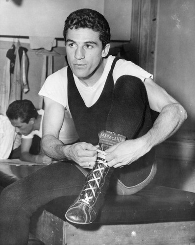
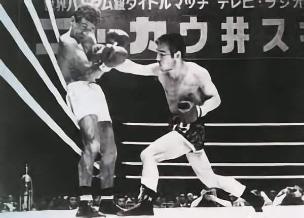
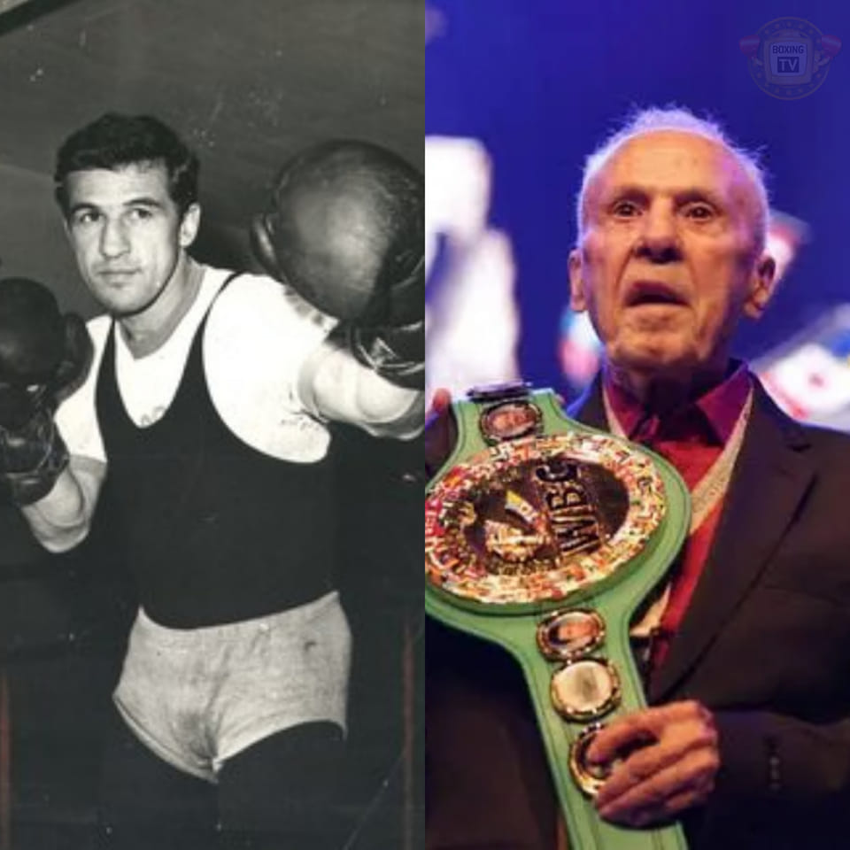

Eder Jofre made his professional boxing debut in 1956 at the age of 19, quickly proving himself as a formidable force in the bantamweight division. Jofre, known for his speed, technical skills, and incredible stamina, rose to prominence with an undefeated streak early in his career, earning respect both in Brazil and internationally.
In 1960, Jofre faced Thailand's Pone Kingpetch for the World Bantamweight title. In a hard-fought battle, Jofre showcased his speed, power, and precision, winning the fight by a unanimous decision and solidifying his place among the top bantamweights of his era.
One of Jofre's most memorable fights came in 1965, when he faced Japan's Fighting Harada. Despite being pushed to the limit, Jofre maintained his composure and resilience, retaining his bantamweight crown in a thrilling match that cemented his legacy as one of the sport's greatest.
Eder Jofre's career was filled with remarkable achievements, particularly his dominance in the bantamweight division. He became the first Brazilian to win a world championship title and went on to defend it successfully multiple times. His legacy as one of the greatest bantamweights of all time remains unchallenged.
Despite his overwhelming success, Jofre faced his share of struggles. After losing his title to Fighting Harada in 1965, Jofre experienced a difficult period in his career. However, he was able to regroup and regain the Bantamweight crown in 1969, proving his resilience. In later years, injuries and the toll of his long career affected his performance, but Jofre’s determination kept him in the sport for many years.
